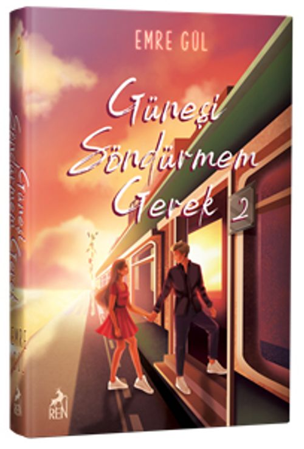

Eğer söndürülmesi gerekiyorsa güneşin, acıma söndür. Çünkü o acımaz, yakar seni.
Her şey düzeldi derken Kerem ve Akın arasında geçen konuşmaya şahit olmasıyla kendini yeni bir enkazın ortasında bulan Umut, zor bir kararın eşiğindedir. Bir seçim yaparak yoluna devam etmek zorundadır. Hayatını alt üst eden gerçeklerin peşine düştüğünde yine yanında en yakın arkadaşı Göktuğ vardır.
Verdiği kayıplar, uğradığı ihanetler, yüzleştiği gerçekler…
Her yıkımdan sonra yeniden ayağa kalkmayı başarsa da bu kez durum, sandığından çok farklı olacaktır.
Aşkın ve aklın mücadelesinde kazanan kim olacak?
Gökyüzü, yıldızları parlasın diye güneşi karanlığıyla öldürdü. Güneş ise bir daha doğmamak üzere veda etti âşık olduğu gökyüzüne.